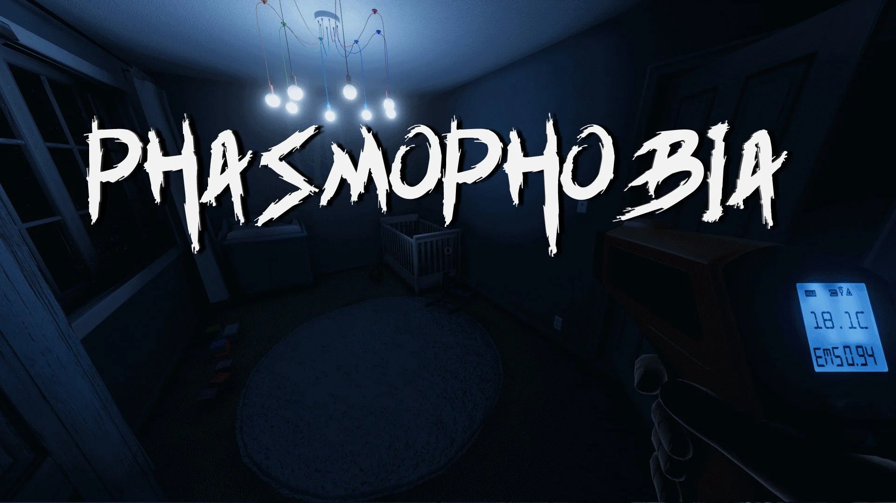
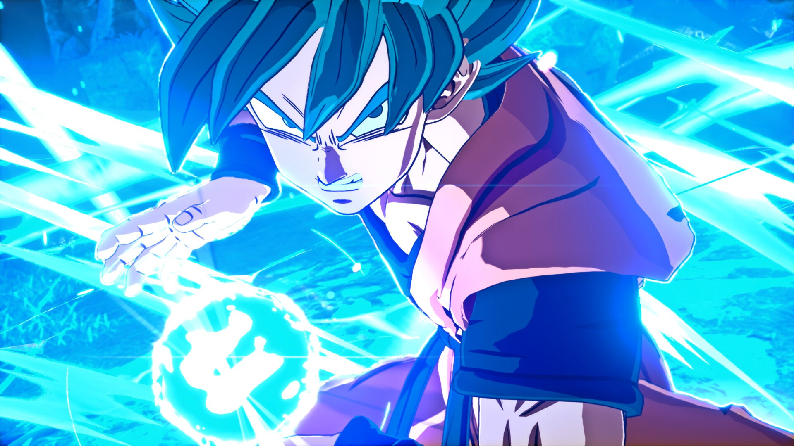
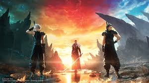

Devil May Cry 5

A Classic and an All-Time Favorite!
Hack and slash games are one of my favorite genre of video games! My favorite of that genre is Devil May Cry! I've spent countless hours on this game! The music is amazing, everything feels so stylish, all the characters are very unique to play and the creativity with the combos is endless!
Phasmophobia
Spooky Game with Friends!
I've always had an interest in the paranormal and all things spooky. The horror theme in general is super interesting to me! I've recently started playing Phasmophobia and its been a blast. It keeps you on your toes when you're playing solo because you never know when the ghost will come out! When you grab friends to play it becomes a comedy!
Dragon Ball Z Sparking Zero
Legedary Series Returns After 17 Years!
I love anime, and Dragon Ball has always been my favorite. I’ve loved it since childhood, and this game captures its fast-paced action perfectly. The beautiful cinematics and epic fights bring out my competitive side—my inner Saiyan pride! I’ve been waiting for this game forever!
Sonic X Shadow Genrations

Perfect Remaster of a Perfect Game!
Ever since I was a kid I've always preferred Sonic over Mario! I played a handful of Sonic games including the original generations! When the remake was announced with added Shadow content I was hooked! A great game to blitz through as fast as you can! Now you can do it as either Sonic or Shadow!
Monster Hunter World

Welcome to Monster Hunter!
I've only recently gotten into Monster Hunter in the past few years but I've been obssessed with this game. Hunting amazing monsters, getting incredibly powerful gear and weapons is so addicting! I personally, main longsword and yes I do like anime!
Final Fantasy 7 Rebirth
Living Legacy
I never got the chance to play the original Final Fantasy 7, but when the remakes began releasing I jumped at the opportunity. This series has some incredible combat, strategy, music, story and characters. This is easily one of my favorite games of all time and I love every bit of it!